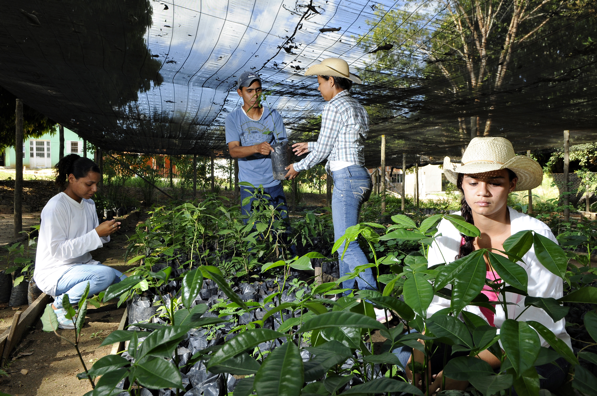

Nossa história
1. A Fundação
Fundada em 2018 em uma comunidade periférica/regional por um grupo de jovens educadores e ambientalistas, a Raízes do Amanhã nasceu de uma inquietação comum: como transformar a realidade local unindo a preservação ambiental à educação de crianças e jovens em situação de vulnerabilidade. O nome surgiu da crença de que, para uma árvore crescer forte e dar frutos no futuro, suas raízes precisam ser bem cuidadas no presente.
2. Os Primeiros Passos na Terra
No início, as atividades aconteciam de forma simples, em espaços cedidos e ao ar livre. O primeiro projeto uniu o plantio de hortas comunitárias ao reforço escolar. Enquanto as crianças aprendiam sobre germinação, ciclos da natureza e sustentabilidade na prática, também desenvolviam o hábito da leitura e o pensamento crítico. Percebeu-se ali que cuidar da terra era, na verdade, uma forma de cuidar de si mesmas e do lugar onde viviam.
3. O Crescimento da Frondosa Rede
Com o passar dos anos, o que era um pequeno grupo de voluntários sob a sombra de árvores se expandiu. A comunidade abraçou a causa. Jovens que começaram como participantes das oficinas viraram monitores, multiplicando o conhecimento que receberam. A ONG passou a abranger oficinas de reciclagem, educação climática e capacitação socioambiental, transformando praças esquecidas em áreas verdes e mentes jovens em agentes de mudança.
4. Os Frutos do Amanhã
Hoje, a Raízes do Amanhã é mais do que uma instituição: é um ecossistema vivo de esperança. Cada árvore plantada e cada jovem formado representam a prova viva de que o futuro não é algo que apenas acontece, mas algo que se cultiva coletivamente. Continuamos fincando nossas raízes cada vez mais fundo, certos de que a colheita do amanhã pertencerá a todos aqueles que aprenderam a cuidar da terra e do próximo.

Junte-se a nós
O futuro não se espera, se planta. Venha fazer parte dessa raiz com a gente.